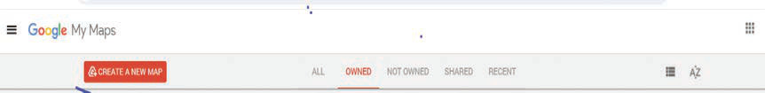

2. Ingia katika menyu ya unda ramani mpya (create new maps) kwenye “Google My Maps” kama inavyowasilishwa katika Kielelezo namba 8.

3. Tafuta anuani ya sehemu unayoihitaji katika ramani kama vile majina ya mbuga, hifadhi, vijiji, kata, wilaya au mikoa. Kwa mfano, andika “Swaga Swaga Game Reserve,” kama inavyowasilishwa kwenye Kielelezo namba 9.

Kielelzo namba 9: Kiolesura cha programu ya “Google My Maps” kwa ajili ya kutafuta eneo la kijiografia
4. Bofya alama ya kutafuta (search) ili kuwasilisha eneo la hifadhi ya Swaga Swaga kama inavyowasilishwa katika Kielelezo namba 10. Baada ya eneo la hifadhi ya Swaga Swaga kuonekana unaweza kuanza kuchora mipaka yake. Kuanza kuchora mipaka ya Swaga Swaga, bofya ‘draw line’ (1) kisha ‘Add line or shapes’ (2) kama inavyowasilishwa katika Kielelezo namba 10.